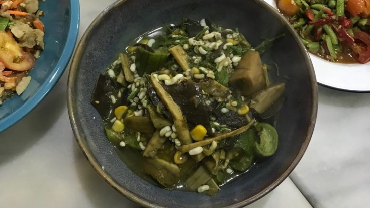
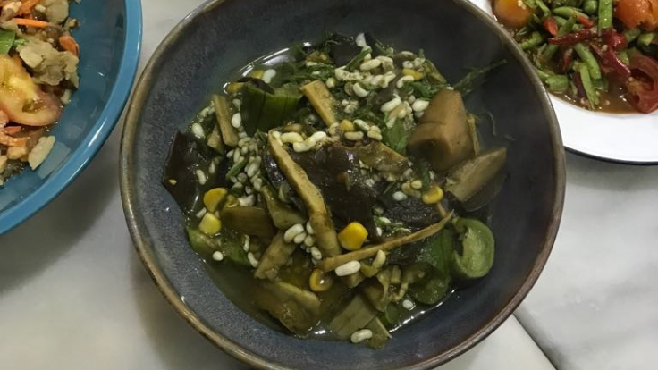

6 เมนูอาหารอีสาน
สุดแซ่บที่พลาดไม่ได้
 

1. ส้มตำ
เมนูที่ทุกคนทั่วโลกรู้จักจานนี้มาในหลากหลายรูปแบบ ลูกอีสานบางคนยืนยันว่าส้มตำจะขาดปลาร้าไม่ได้ แต่หัวใจของจานนี้อยู่ที่เส้นมะละกอดิบที่ต้องสดกรอบ ก่อนนำมาตำกับมะเขือเทศ พริก และกระเทียม ตำปลาร้าฉบับอีสานแท้ ๆ โดดเด่นด้วยกลิ่นแรงจากปลาร้า รสนัวจากมะกอก และความกรอบจากเม็ดกระถิน ถ้าใจยังไม่ถึงพออาจลองตำไทยที่คนภาคกลางนำมาปรับให้กินได้ง่ายขึ้นก่อนได้ รสชาติออกเปรี้ยวหวานจากน้ำตาลปี๊บและน้ำมะนาว ผสานรสเค็มจากน้ำปลาและกุ้งแห้ง ความกรอบก็ยังมีอยู่ แต่ใช้ถั่วลิสงแทนเม็ดกระถิน นอกจากตำปลาร้าและตำไทยแล้ว ยังมีตำซั่ว (ส้มตำผสมเส้นขนมจีน) ตำข้าวโพด ตำแตง ตำผลไม้ และอื่น ๆ ตามแต่ร้านจะสร้างสรรค์ ทุกแบบเพิ่มความอร่อยได้ด้วยการจกคู่ข้าวเหนียวหรือขนมจีน
2. ลาบ
อาหารอีสานขึ้นชื่ออีกจาน ทำจากเนื้อสัตว์บดคลุกกับข้าวคั่ว หอมแดง ต้นหอม ใบสะระแหน่ เสริมรสด้วยพริก น้ำมะนาว และน้ำปลาหรือปลาร้า เนื้อที่ใช้โดยมากจะเป็นหมู วัว ไก่ หรือเป็ด แต่บางพื้นที่ก็ใช้เนื้อสัตว์ที่หาได้ในท้องถิ่นอีกด้วย นอกจากนี้ ยังมีเมนูลาบเลือดที่ผสมเลือดวัวหรือหมูสด เช่นเดียวกับอาหารอีสานอื่น ๆ นอกจากนั้นคนไทยยังชอบรับประทานลาบคู่กับข้าวเหนียวนึ่ง ในปัจจุบันบางร้านยังมีเมนูลาบทอดที่นำวัตถุดิบลาบมาปั้นเป็นก้อนกลมแล้วนำไปทอดกรอบ เกิดเป็นลาบทอดแสนอร่อยด้วย
3. ก้อย
ถ้าเปรียบเมนูนี้กับวัฒนธรรมอาหารฝั่งตะวันตก เราคงเรียกเมนูนี้ว่า ทาร์ทาร์ (tartare) ในแบบฉบับอีสาน ก้อยคือเนื้อดิบสับหรือหั่นเป็นชิ้นเล็ก ๆ แล้วนำไปคลุกเคล้ากับเครื่องเทศและผัก เนื้อที่ใช้ทำมีทั้งวัว ควาย กวาง ปลา กุ้ง หรือแม้แต่ไข่มดแดง ส่วนผสมอื่น ๆ จะเหมือนกับลาบ และแน่นอนว่าต้องกินคู่กับข้าวเหนียวร้อน ๆ เพื่อให้ซึมซับประสบการณ์อาหารอีสานอย่างเต็มที่
4. อ่อม
แกงกะหรี่แดนอีสาน ทำจากน้ำพริกโขลกสด ๆ แคลอรี่น้อยเพราะไร้กะทิ ความอร่อยอยู่ที่ผักสดตามฤดูกาลที่นำมาทำ ใส่เนื้อได้หลากหลายทั้งไก่ กบ หมู ปลาดุก หรือหอยทาก พริกแกงผสานรสชาติจากทั้งกระเทียม หอมแดง ตะไคร้ และพริก แล้วเสริมกลิ่นอันเป็นเอกลักษณ์ด้วยผักชีลาวและใบแมงลัก บางสูตรจะระบุไว้ชัดเจนว่าเนื้อชนิดไหนใช้คู่กับผักอะไร
5. แกงหน่อไม้ใบย่านาง
แกงอีสานแสนอร่อยนี้ เหมาะสำหรับคนที่กำลังลดน้ำหนัก เพราะเป็นแกงที่ไม่ใส่กะทิ อันดับแรก นำหน่อไม้สดมาต้มเพื่อกำจัดรสขม ก่อนนำไปต้มรวมกับพริกแกงสีเขียวจากใบย่านาง แล้วเสริมความข้นด้วยข้าวเบือที่โขลกไว้ ใส่เครื่องแกงอื่น ๆ ที่เตรียมไว้ทั้งพริกขี้หนูและหอมแดง และปลาร้าเพื่อเพิ่มรส นอกจากนี้ยังสามารถใส่ผักตามฤดูกาลเพิ่มรสชาติได้อีกด้วย
6. ข้าวจี่
ข้าวจี่ตำรับอีสานคือข้าวเหนียวอัดเป็นแผ่นกลมหรือก้อนรี ชุบไข่ผสมเกลือแล้วนำไปย่าง เป็นภูมิปัญญาการถนอมข้าว
เหนียวไม่ให้เสียเพราะอากาศแสนร้อน